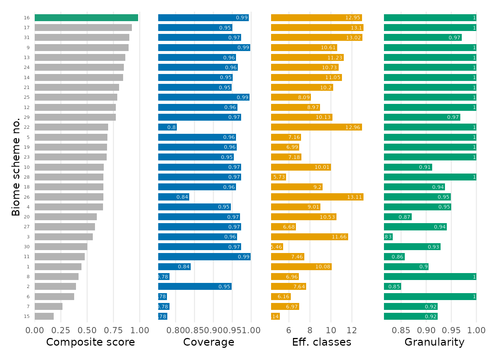

Step 2: Choosing a biome scheme
Source:vignettes/step2-choosing-a-biome-scheme.Rmd
step2-choosing-a-biome-scheme.RmdGoal
Step 1 gave us occurrence records and the 31 biome schemes. With 31 schemes to choose from, this step picks the one that best fits your data, so the choice is explicit and reproducible rather than defaulting to a familiar scheme.
Terms. A biome scheme is one of the 31 classification systems; a biome class is a category within it; a biome scheme number (1-31) identifies a scheme. The
scheme_typeargument groups schemes by methodology.
1. Rank the schemes for your data
biomes_rank() scores every scheme for your occurrences
and proposes a single best-fitting scheme. Each scheme is rated on three
complementary, data-driven criteria:
- coverage: share of records that fall on a defined biome class.
-
effective number of classes:
exp(H'), the effective number of biome classes the records occupy (rewards schemes that spread the data over several well-populated classes). - granularity: occupied biome classes divided by the total number of biome classes in the scheme.
The three criteria are min-max scaled to [0, 1] and
averaged (equal weights) into a composite score. The
best-scoring scheme is returned in
attr(ranking, "best_scheme").
ranking <- biomes_rank(biomes_example, verbose = FALSE)
best <- attr(ranking, "best_scheme")
best
#> [1] 16
head(ranking)
#> scheme
#> 1 1
#> 2 2
#> 3 3
#> 4 4
#> 5 5
#> 6 6
#> scheme_name
#> 1 Global vegetation patterns of the past 140,000 years
#> 2 Dataset of the global component of the Copernicus Land Monitoring Service
#> 3 Present and future Köppen-Geiger climate classification maps at 1-km resolution
#> 4 Global mapping of potential natural vegetation: an assessment of machine learning algorithms for estimating land potential
#> 5 An ecoregion-based approach to protecting half the terrestrial realm
#> 6 A global classification of vegetation based on NDVI, rainfall and temperature
#> year n_total n_hit n_na pct_na coverage_raw coverage_scaled
#> 1 2020 29104 24452 4652 15.98 0.8401594 0.2844065
#> 2 2019 29104 27587 1517 5.21 0.9478766 0.7708301
#> 3 2018 29104 28023 1081 3.71 0.9628573 0.8384794
#> 4 2018 29104 27538 1566 5.38 0.9461930 0.7632273
#> 5 2017 29104 27943 1161 3.99 0.9601086 0.8260667
#> 6 2017 29104 22619 6485 22.28 0.7771784 0.0000000
#> effective_classes_raw effective_classes_scaled granularity_raw
#> 1 10.080182 0.6202006 0.9047619
#> 2 7.637310 0.3138203 0.8500000
#> 3 11.659664 0.8182963 0.8333333
#> 4 9.012508 0.4862950 0.9500000
#> 5 7.159880 0.2539420 1.0000000
#> 6 6.163172 0.1289367 1.0000000
#> granularity_scaled composite_score rank is_best
#> 1 0.4285714 0.4443928 26 FALSE
#> 2 0.1000000 0.3948835 28 FALSE
#> 3 0.0000000 0.5522586 23 FALSE
#> 4 0.7000000 0.6498408 20 FALSE
#> 5 1.0000000 0.6933362 13 FALSE
#> 6 1.0000000 0.3763122 29 FALSEThe result is a data frame with one row per scheme; the key columns
are scheme (the biome scheme number),
scheme_name, composite_score and
is_best.
Rank within a conceptually comparable group
Comparing schemes of different methodologies can mislead, so restrict
the ranking to one group with scheme_type:
r_veg <- biomes_rank(biomes_example, scheme_type = "vegetation", verbose = FALSE)
attr(r_veg, "best_scheme")
#> [1] 9
table(biomes_information$scheme_type) # how many schemes per group
#>
#> anthropogenic climate ecoregion integrative land_cover
#> 1 8 4 5 7
#> vegetation
#> 6scheme_type = "all" (the default) ranks all 31 schemes.
Other groups are "climate", "vegetation",
"land_cover", "ecoregion",
"integrative" and "anthropogenic".
2. Inspect the ranking
The rank panel of biomes_visualise() shows
the composite score per scheme with the best scheme highlighted:
biomes_visualise(biomes_example, panels = "rank")
Treat the ranking as a shortlist, not an
authoritative answer: the most suitable scheme ultimately depends on
your research question. Inspect the criterion-specific columns of the
ranking and use biomes_info() to pick the scheme whose
concept and resolution match your data.
The integer in attr(ranking, "best_scheme") is exactly
the biome scheme number you pass as scheme to the
classification and visualisation functions next.
Next
You have a chosen biome scheme. Continue with Step 3: Occurrences-to-biome classification.